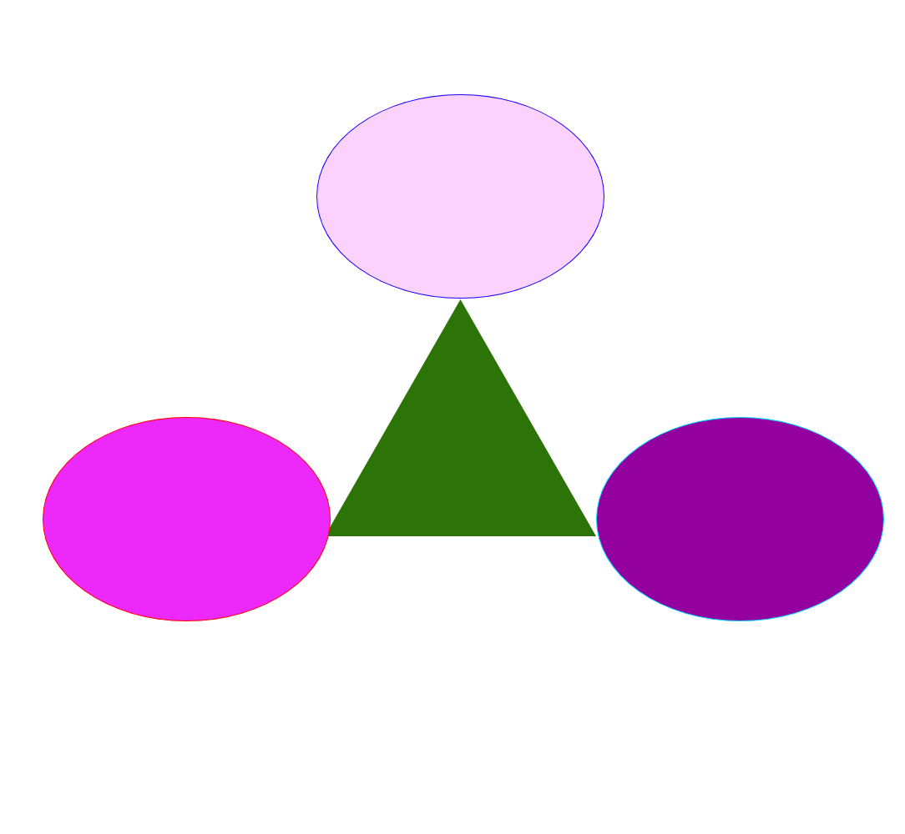
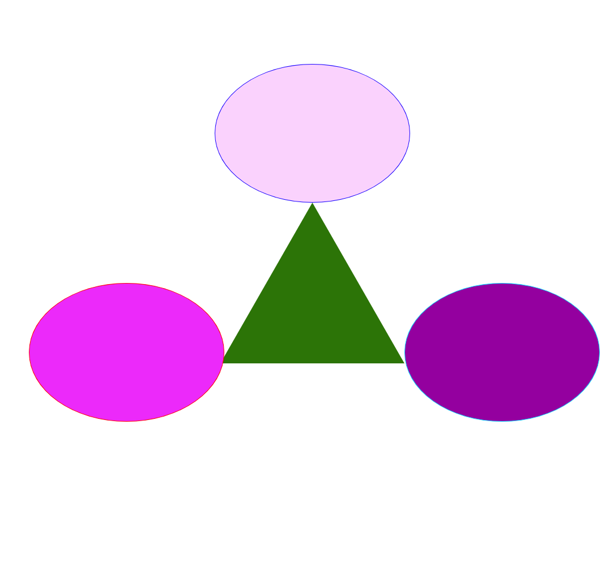

Step 1
Open Adobe XD
Step 2
Create artboard layout of width 1084cm height 1000cm
Step 3
Select the triangle tool and create a triangle with width of 325cm height 284cm X-axis 389cm Y-axis 359cm
The triangle fill of #2C7407 with no border
Step 4
Select the circle tool and create three circles
All three circles with have width 345cm height 245cm
1st circle will be placed on x-axis 379cm y-axis 113cm with fill of #FAD2FD with border #1700FF
2nd circle will be placed on x-axis 51cm y-axis 500cm with fill of #EC29FA with border #FF0000
3rd circle will be placed on x-axis 714cm y-axis 500cm with fill of #94009F with border #06D6FF
Step 5
File export as a png file
Step 6
After completion send the png via email to tfrench7@masonlive.gmu.educomputer drawing
My drawing
<